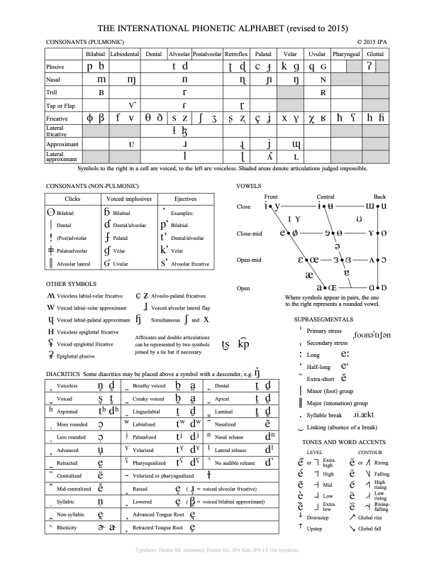

Articulatory Phonetics#
Programming Environment#
Show code cell source
import numpy as np
np.set_printoptions(suppress=True) # suppress scientific notation
import numpy.random as npr
import pandas as pd
import matplotlib as mpl
import matplotlib.pyplot as plt
plt.rcParams['figure.figsize'] = (10, 6)
from html.entities import codepoint2name
import string
import unicodedata
from datetime import datetime as d
import locale as l
import platform as p
import sys as s
pad = 20
print(f"{'Executed'.upper():<{pad}}: {d.now()}")
print()
print(f"{'Platform' :<{pad}}: "
f"{p.mac_ver()[0]} | "
f"{p.system()} | "
f"{p.release()} | "
f"{p.machine()}")
print(f"{'' :<{pad}}: {l.getpreferredencoding()}")
print()
print(f"{'Python' :<{pad}}: {s.version}")
print(f"{'' :<{pad}}: {s.version_info}")
print(f"{'' :<{pad}}: {p.python_implementation()}")
print()
print(f"{'Matplotlib' :<{pad}}: {mpl.__version__}")
print(f"{'NumPy' :<{pad}}: { np.__version__}")
print(f"{'Pandas' :<{pad}}: { pd.__version__}")
EXECUTED : 2024-05-21 15:45:06.090224
Platform : 14.4.1 | Darwin | 23.4.0 | arm64
: UTF-8
Python : 3.11.9 | packaged by conda-forge | (main, Apr 19 2024, 18:34:54) [Clang 16.0.6 ]
: sys.version_info(major=3, minor=11, micro=9, releaselevel='final', serial=0)
: CPython
Matplotlib : 3.8.4
NumPy : 1.26.4
Pandas : 2.2.2
Show code cell source
def dec_to_hex (dec : int = 2**16 - 1) -> str:
""" Compose the hexadecimal representation
as a string
of a nonnegative integer.
params: int (dec)
return: str
"""
assert 0 <= dec, 'Try again with a nonnegative integer.'
return format(dec, '>06x').upper()
def to_codepoint (hexa : str = '10FFFF') -> str:
""" Compose a Unicode code point
as a string.
params: str (hexa)
return: str
"""
assert int(hexa, base=16) <= 0x10FFFF, 'Try again with a valid code point.'
return fr'\U00{hexa}'
# Nonnegative integer no greater than 0x10FFFF (1_114_111)
dec_to_glyph = chr
def to_glyph (code_point : str = '\\u00FF') -> str:
""" Convert a raw Unicode code point to its non raw (graphical) form.
params: str (code_point)
return: str
"""
return code_point.encode('utf-8').decode('unicode-escape')
def print_code_point_information (points : str = 'hello world') -> None:
""" Prints information about Unicode code points.
Prints the sequence of code points
the number of code points in the sequence
the following information for each Unicode code point in a sequence of code points:
* glyph
* raw code point
* hexadecimal repr
* byte repr
* Unicode category
* Named entity repr
* Unicode name
params: str (points)
return: None
"""
#print(points)
#print(len(points))
print()
print(f"{'Glyph':<10} "
f"{'Code Point':<10} "
f"{'Hex':<10} "
f"{'Bytes':<20} "
f"{'Category':<10} "
f"{'Named Entity':<20} "
f"{'Name':<10}")
try:
for point in points:
hex_rep = dec_to_hex(ord(point))
code_point = to_codepoint(hex_rep)
glyph = to_glyph(code_point)
unicode = (f"{chr(ord(point)):<10} "
f"{code_point:<10} "
f"{format(ord(point), '06x').upper():<10} "
f"{str(point.encode('utf-8')):<20} "
f"{unicodedata.category(chr(ord(point))):<10} ")
try:
unicode += f"{codepoint2name[ord(point)]:<20} "
except KeyError as e:
unicode += f"{'NO NAMED ENTITY':<20} "
try:
unicode += f"{unicodedata.name(point)}"
except ValueError as e:
unicode += f"NO UNICODE NAME"
print(unicode)
except AssertionError as e:
print(f"Case {point}: {e}")
International Phonetic Alphabet#

Unicode#
Show code cell source
ipa = [
'near-open central vowel',
'open back unrounded vowel',
'open back rounded vowel',
'voiced bilabial implosive',
'open-mid back rounded vowel',
'voiceless alveopalatal fricative',
'voiced retroflex plosive',
'voiced alveolar implosive',
'close-mid central unrounded vowel',
'mid central vowel',
'rhotacized mid central vowel',
'open-mid front unrounded vowel',
'open-mid central unrounded vowel',
'rhotacized open-mid central unrounded vowel',
'open-mid central rounded vowel',
'voiced palatal plosive',
'voiced velar implosive',
'voiced velar plosive',
'voiced uvular plosive',
'voiced velar fricative',
'close-mid back unrounded vowel',
'voiced labiopalatal approximant',
'voiced glottal fricative',
'sj sound',
'close central unrounded vowel',
'(obsolete)',
'near-close near-front unrounded vowel',
'voiced alveolar lateral approximant',
'voiceless alveolar lateral fricative',
'voiced retroflex lateral approximant',
'voiced alveolar lateral fricative',
'close back unrounded vowel',
'voiced velar approximant',
'voiced labiodental nasal',
'voiced palatal nasal',
'voiced retroflex nasal',
'voiced uvular nasal',
'close-mid central rounded vowel',
'open front rounded vowel',
'(obsolete)',
'voiceless bilabial fricative',
'voiced alveolar approximant',
'voiced alveolar lateral flap',
'voiced retroflex approximant',
'voiced alveolar trill',
'voiced retroflex flap',
'voiced alveolar tap',
'voiced alveolar fricative',
'voiced uvular trill',
'voiced uvular fricative',
'voiceless retroflex fricative',
'voiceless postalveolar fricative',
'voiced palatal implosive',
'syllabic voiced retroflex fricative',
'voiceless alveopalatal fricative',
'dental click',
'voiceless retroflex plosive',
'close central rounded vowel',
'near-close near-back rounded vowel',
'voiced labiodental approximant',
'open-mid back unrounded vowel',
'voiceless labiovelar fricative',
'voiced palatal lateral approximant',
'near-close near-front rounded vowel',
'voiced retroflex fricative',
'voiced alveopalatal fricative',
'voiced postalveolar fricative',
'glottal stop',
'voiced pharyngeal fricative',
'alveolar lateral click (obsolete)',
'postalveolar click (obsolete)',
'bilabial click',
'voiced bilabial trill',
'?',
'voiced uvular implosive',
'voiceless epiglottal fricative/trill',
'voiced palatal fricative',
'velar click (obsolete)',
'voiced velar lateral approximant',
'voiceless uvular implosive (obsolete)',
'epiglottal plosive',
'voiced epiglottal fricative/trill',
'voiced alveolar affricate',
'voiced postalveolar affricate',
'voiced alveopalatal affricate',
'voiceless alveolar affricate',
'voiceless postalveolar affricate',
'voiceless alveopalatal affricate',
'velopharyngeal fricative',
'voiceless grooved lateral alveolar fricative',
'voiced grooved lateral alveolar fricative',
'bilabial percussive',
'bidental percussive',
'syllabic labialized voiced alveolar fricative',
'syllabic labialized voiced retroflex fricative',
]
start = 0x0250
stop = 0x02AF
points = [c for c in range(start, stop)]
print(f"{'Glyph':<20}{'Unicode':<20}{'IPA':<50}{'Unicode'}")
for i, point in enumerate(points):
print(f"{chr(point):<20}{to_codepoint(dec_to_hex(point)):<20}{ipa[i]:<50}{unicodedata.name(chr(point))}")
Glyph Unicode IPA Unicode
ɐ \U00000250 near-open central vowel LATIN SMALL LETTER TURNED A
ɑ \U00000251 open back unrounded vowel LATIN SMALL LETTER ALPHA
ɒ \U00000252 open back rounded vowel LATIN SMALL LETTER TURNED ALPHA
ɓ \U00000253 voiced bilabial implosive LATIN SMALL LETTER B WITH HOOK
ɔ \U00000254 open-mid back rounded vowel LATIN SMALL LETTER OPEN O
ɕ \U00000255 voiceless alveopalatal fricative LATIN SMALL LETTER C WITH CURL
ɖ \U00000256 voiced retroflex plosive LATIN SMALL LETTER D WITH TAIL
ɗ \U00000257 voiced alveolar implosive LATIN SMALL LETTER D WITH HOOK
ɘ \U00000258 close-mid central unrounded vowel LATIN SMALL LETTER REVERSED E
ə \U00000259 mid central vowel LATIN SMALL LETTER SCHWA
ɚ \U0000025A rhotacized mid central vowel LATIN SMALL LETTER SCHWA WITH HOOK
ɛ \U0000025B open-mid front unrounded vowel LATIN SMALL LETTER OPEN E
ɜ \U0000025C open-mid central unrounded vowel LATIN SMALL LETTER REVERSED OPEN E
ɝ \U0000025D rhotacized open-mid central unrounded vowel LATIN SMALL LETTER REVERSED OPEN E WITH HOOK
ɞ \U0000025E open-mid central rounded vowel LATIN SMALL LETTER CLOSED REVERSED OPEN E
ɟ \U0000025F voiced palatal plosive LATIN SMALL LETTER DOTLESS J WITH STROKE
ɠ \U00000260 voiced velar implosive LATIN SMALL LETTER G WITH HOOK
ɡ \U00000261 voiced velar plosive LATIN SMALL LETTER SCRIPT G
ɢ \U00000262 voiced uvular plosive LATIN LETTER SMALL CAPITAL G
ɣ \U00000263 voiced velar fricative LATIN SMALL LETTER GAMMA
ɤ \U00000264 close-mid back unrounded vowel LATIN SMALL LETTER RAMS HORN
ɥ \U00000265 voiced labiopalatal approximant LATIN SMALL LETTER TURNED H
ɦ \U00000266 voiced glottal fricative LATIN SMALL LETTER H WITH HOOK
ɧ \U00000267 sj sound LATIN SMALL LETTER HENG WITH HOOK
ɨ \U00000268 close central unrounded vowel LATIN SMALL LETTER I WITH STROKE
ɩ \U00000269 (obsolete) LATIN SMALL LETTER IOTA
ɪ \U0000026A near-close near-front unrounded vowel LATIN LETTER SMALL CAPITAL I
ɫ \U0000026B voiced alveolar lateral approximant LATIN SMALL LETTER L WITH MIDDLE TILDE
ɬ \U0000026C voiceless alveolar lateral fricative LATIN SMALL LETTER L WITH BELT
ɭ \U0000026D voiced retroflex lateral approximant LATIN SMALL LETTER L WITH RETROFLEX HOOK
ɮ \U0000026E voiced alveolar lateral fricative LATIN SMALL LETTER LEZH
ɯ \U0000026F close back unrounded vowel LATIN SMALL LETTER TURNED M
ɰ \U00000270 voiced velar approximant LATIN SMALL LETTER TURNED M WITH LONG LEG
ɱ \U00000271 voiced labiodental nasal LATIN SMALL LETTER M WITH HOOK
ɲ \U00000272 voiced palatal nasal LATIN SMALL LETTER N WITH LEFT HOOK
ɳ \U00000273 voiced retroflex nasal LATIN SMALL LETTER N WITH RETROFLEX HOOK
ɴ \U00000274 voiced uvular nasal LATIN LETTER SMALL CAPITAL N
ɵ \U00000275 close-mid central rounded vowel LATIN SMALL LETTER BARRED O
ɶ \U00000276 open front rounded vowel LATIN LETTER SMALL CAPITAL OE
ɷ \U00000277 (obsolete) LATIN SMALL LETTER CLOSED OMEGA
ɸ \U00000278 voiceless bilabial fricative LATIN SMALL LETTER PHI
ɹ \U00000279 voiced alveolar approximant LATIN SMALL LETTER TURNED R
ɺ \U0000027A voiced alveolar lateral flap LATIN SMALL LETTER TURNED R WITH LONG LEG
ɻ \U0000027B voiced retroflex approximant LATIN SMALL LETTER TURNED R WITH HOOK
ɼ \U0000027C voiced alveolar trill LATIN SMALL LETTER R WITH LONG LEG
ɽ \U0000027D voiced retroflex flap LATIN SMALL LETTER R WITH TAIL
ɾ \U0000027E voiced alveolar tap LATIN SMALL LETTER R WITH FISHHOOK
ɿ \U0000027F voiced alveolar fricative LATIN SMALL LETTER REVERSED R WITH FISHHOOK
ʀ \U00000280 voiced uvular trill LATIN LETTER SMALL CAPITAL R
ʁ \U00000281 voiced uvular fricative LATIN LETTER SMALL CAPITAL INVERTED R
ʂ \U00000282 voiceless retroflex fricative LATIN SMALL LETTER S WITH HOOK
ʃ \U00000283 voiceless postalveolar fricative LATIN SMALL LETTER ESH
ʄ \U00000284 voiced palatal implosive LATIN SMALL LETTER DOTLESS J WITH STROKE AND HOOK
ʅ \U00000285 syllabic voiced retroflex fricative LATIN SMALL LETTER SQUAT REVERSED ESH
ʆ \U00000286 voiceless alveopalatal fricative LATIN SMALL LETTER ESH WITH CURL
ʇ \U00000287 dental click LATIN SMALL LETTER TURNED T
ʈ \U00000288 voiceless retroflex plosive LATIN SMALL LETTER T WITH RETROFLEX HOOK
ʉ \U00000289 close central rounded vowel LATIN SMALL LETTER U BAR
ʊ \U0000028A near-close near-back rounded vowel LATIN SMALL LETTER UPSILON
ʋ \U0000028B voiced labiodental approximant LATIN SMALL LETTER V WITH HOOK
ʌ \U0000028C open-mid back unrounded vowel LATIN SMALL LETTER TURNED V
ʍ \U0000028D voiceless labiovelar fricative LATIN SMALL LETTER TURNED W
ʎ \U0000028E voiced palatal lateral approximant LATIN SMALL LETTER TURNED Y
ʏ \U0000028F near-close near-front rounded vowel LATIN LETTER SMALL CAPITAL Y
ʐ \U00000290 voiced retroflex fricative LATIN SMALL LETTER Z WITH RETROFLEX HOOK
ʑ \U00000291 voiced alveopalatal fricative LATIN SMALL LETTER Z WITH CURL
ʒ \U00000292 voiced postalveolar fricative LATIN SMALL LETTER EZH
ʓ \U00000293 glottal stop LATIN SMALL LETTER EZH WITH CURL
ʔ \U00000294 voiced pharyngeal fricative LATIN LETTER GLOTTAL STOP
ʕ \U00000295 alveolar lateral click (obsolete) LATIN LETTER PHARYNGEAL VOICED FRICATIVE
ʖ \U00000296 postalveolar click (obsolete) LATIN LETTER INVERTED GLOTTAL STOP
ʗ \U00000297 bilabial click LATIN LETTER STRETCHED C
ʘ \U00000298 voiced bilabial trill LATIN LETTER BILABIAL CLICK
ʙ \U00000299 ? LATIN LETTER SMALL CAPITAL B
ʚ \U0000029A voiced uvular implosive LATIN SMALL LETTER CLOSED OPEN E
ʛ \U0000029B voiceless epiglottal fricative/trill LATIN LETTER SMALL CAPITAL G WITH HOOK
ʜ \U0000029C voiced palatal fricative LATIN LETTER SMALL CAPITAL H
ʝ \U0000029D velar click (obsolete) LATIN SMALL LETTER J WITH CROSSED-TAIL
ʞ \U0000029E voiced velar lateral approximant LATIN SMALL LETTER TURNED K
ʟ \U0000029F voiceless uvular implosive (obsolete) LATIN LETTER SMALL CAPITAL L
ʠ \U000002A0 epiglottal plosive LATIN SMALL LETTER Q WITH HOOK
ʡ \U000002A1 voiced epiglottal fricative/trill LATIN LETTER GLOTTAL STOP WITH STROKE
ʢ \U000002A2 voiced alveolar affricate LATIN LETTER REVERSED GLOTTAL STOP WITH STROKE
ʣ \U000002A3 voiced postalveolar affricate LATIN SMALL LETTER DZ DIGRAPH
ʤ \U000002A4 voiced alveopalatal affricate LATIN SMALL LETTER DEZH DIGRAPH
ʥ \U000002A5 voiceless alveolar affricate LATIN SMALL LETTER DZ DIGRAPH WITH CURL
ʦ \U000002A6 voiceless postalveolar affricate LATIN SMALL LETTER TS DIGRAPH
ʧ \U000002A7 voiceless alveopalatal affricate LATIN SMALL LETTER TESH DIGRAPH
ʨ \U000002A8 velopharyngeal fricative LATIN SMALL LETTER TC DIGRAPH WITH CURL
ʩ \U000002A9 voiceless grooved lateral alveolar fricative LATIN SMALL LETTER FENG DIGRAPH
ʪ \U000002AA voiced grooved lateral alveolar fricative LATIN SMALL LETTER LS DIGRAPH
ʫ \U000002AB bilabial percussive LATIN SMALL LETTER LZ DIGRAPH
ʬ \U000002AC bidental percussive LATIN LETTER BILABIAL PERCUSSIVE
ʭ \U000002AD syllabic labialized voiced alveolar fricative LATIN LETTER BIDENTAL PERCUSSIVE
ʮ \U000002AE syllabic labialized voiced retroflex fricative LATIN SMALL LETTER TURNED H WITH FISHHOOK
Constructing IPA in Python via Unicode#
place_of_articulation = [
'bilabial',
'labiodental',
'dental',
'alveolar',
'postalveolar',
'retroflex',
'palatal',
'velar',
'uvular',
'pharyngeal',
'glottal',
]
manner_of_articulation = [
'plosive',
'nasal',
'trill',
'flap/tap',
'fricative',
'fricative(lateral)',
'approximant',
'approximant(lateral)',
]
unicode_ipa=[
['\u0070','\u0062', '', '', '', '','\u0074','\u0064', '', '','\u0288','\u0256','\u0063','\u025F','\u006B','\u0261','\u0071','\u0262', '', '','\u0294', ''],
[ '','\u006D', '','\u0271', '', '', '','\u006E', '', '', '','\u0273', '','\u0272', '','\u014B', '','\u0274', '', '', '', ''],
[ '','\u0299', '', '', '', '', '','\u0072', '', '', '', '', '', '', '', '', '','\u0280', '', '', '', ''],
[ '', '', '','\u2C71', '', '', '','\u027E', '', '', '','\u027D', '', '', '', '', '', '', '', '', '', ''],
['\u0278','\u03B2','\u0066','\u0076','\u03B8','\u00F0','\u0073','\u007A','\u0283','\u0292','\u0282','\u0290','\u00E7','\u029D','\u0078','\u0263','\u03C7','\u0281','\u0127','\u0295','\u0068','\u0266'],
[ '', '', '', '', '', '','\u026C','\u026E', '', '', '', '', '', '', '', '', '', '', '', '', '', ''],
[ '', '', '','\u028B', '', '', '','\u0279', '', '', '','\u027B', '','\u006A', '','\u0270', '', '', '', '', '', ''],
[ '', '', '', '', '', '', '','\u006C', '', '', '','\u026D', '','\u028E', '','\u029F', '', '', '', '', '', ''],
]
unicode_ipa
[['p',
'b',
'',
'',
'',
'',
't',
'd',
'',
'',
'ʈ',
'ɖ',
'c',
'ɟ',
'k',
'ɡ',
'q',
'ɢ',
'',
'',
'ʔ',
''],
['',
'm',
'',
'ɱ',
'',
'',
'',
'n',
'',
'',
'',
'ɳ',
'',
'ɲ',
'',
'ŋ',
'',
'ɴ',
'',
'',
'',
''],
['',
'ʙ',
'',
'',
'',
'',
'',
'r',
'',
'',
'',
'',
'',
'',
'',
'',
'',
'ʀ',
'',
'',
'',
''],
['',
'',
'',
'ⱱ',
'',
'',
'',
'ɾ',
'',
'',
'',
'ɽ',
'',
'',
'',
'',
'',
'',
'',
'',
'',
''],
['ɸ',
'β',
'f',
'v',
'θ',
'ð',
's',
'z',
'ʃ',
'ʒ',
'ʂ',
'ʐ',
'ç',
'ʝ',
'x',
'ɣ',
'χ',
'ʁ',
'ħ',
'ʕ',
'h',
'ɦ'],
['',
'',
'',
'',
'',
'',
'ɬ',
'ɮ',
'',
'',
'',
'',
'',
'',
'',
'',
'',
'',
'',
'',
'',
''],
['',
'',
'',
'ʋ',
'',
'',
'',
'ɹ',
'',
'',
'',
'ɻ',
'',
'j',
'',
'ɰ',
'',
'',
'',
'',
'',
''],
['',
'',
'',
'',
'',
'',
'',
'l',
'',
'',
'',
'ɭ',
'',
'ʎ',
'',
'ʟ',
'',
'',
'',
'',
'',
'']]
Show code cell source
ipa = pd.DataFrame(
data=unicode_ipa,
columns=pd.MultiIndex.from_product([place_of_articulation, ['u','v']]),
index=manner_of_articulation
)
ipa.style \
.set_caption('IPA') \
.set_properties(**{
'font-size' : '18pt',
})
| bilabial | labiodental | dental | alveolar | postalveolar | retroflex | palatal | velar | uvular | pharyngeal | glottal | ||||||||||||
|---|---|---|---|---|---|---|---|---|---|---|---|---|---|---|---|---|---|---|---|---|---|---|
| u | v | u | v | u | v | u | v | u | v | u | v | u | v | u | v | u | v | u | v | u | v | |
| plosive | p | b | t | d | ʈ | ɖ | c | ɟ | k | ɡ | q | ɢ | ʔ | |||||||||
| nasal | m | ɱ | n | ɳ | ɲ | ŋ | ɴ | |||||||||||||||
| trill | ʙ | r | ʀ | |||||||||||||||||||
| flap/tap | ⱱ | ɾ | ɽ | |||||||||||||||||||
| fricative | ɸ | β | f | v | θ | ð | s | z | ʃ | ʒ | ʂ | ʐ | ç | ʝ | x | ɣ | χ | ʁ | ħ | ʕ | h | ɦ |
| fricative(lateral) | ɬ | ɮ | ||||||||||||||||||||
| approximant | ʋ | ɹ | ɻ | j | ɰ | |||||||||||||||||
| approximant(lateral) | l | ɭ | ʎ | ʟ | ||||||||||||||||||
Terms#
Components of Speech Production#
[1] Airstream Mechanism (e.g., the energy of the lungs produces an airstream)
[2] Phonation (e.g., the larynx modifies the airstream by means of phonation)
[3] Articulation (e.g., the vocal tract modulates the airstream by means of the articulators: the glottis, the uvula, the tongue, and the lips)
Airstream Mechanism#
The airstream mechanism is the method by which airflow is produced in the vocal tract.
The initiating organ or initiator is the organ which generates the airstream.
[1] Pulmonic mechanism: lungs + diaphragm
[2] Glottalic mechanism: glottis
[3] Lingual/Velaric mechanism: tongue
The initiator may act by either increasing or decreasing the air pressure generating the airstream.
A change in air pressure which corresponds to outward airflow is called egressive; and a change in air pressure which corresponds to inward airflow is called ingressive.
. |
pulmonic |
glottalic |
velaric |
|---|---|---|---|
egressive |
e.g. Vowel |
Ejective |
interjection (e.g., a “spurt”) |
ingressive |
interjection (e.g., a gasp) |
Implosive |
Click |
Units of Speech#
Segmentals: consonants and vowels
Suprasegmentals or prosodic features: stress, loudness, pitch, length, and secondary articulation
[W] Contour
[W] Consonant
[W] Intonation
[W] Isochrony
[W] Mora
[W] Prosodic Unit
[W] Prosody
[W] Rhythm
[W] Segment
[W] Stress
[W] Syllable
[W] Suprasegmental
[W] Tempo
[W] Tone
[W] Tone Contour
[W] Vowel
Consonants#
Where in the vocal tract does the articulation take place? place of articulation
Lips: (bi)labial
Teeth: dental
Tongue against upper gums: alveolar
Tongue against palate: palatal
Is breath involved? Pulmonic vs Non Pulmonic; phonation
When breath is involved, how is it manipulated? manner of articulation
single burst of air: plosive
air passes through the nasal cavity: nasal
short, speedy bursts of air: trill
hard narrowing of air passage: fricative
hard narrowing of air passage around tongue: lateral fricative
soft narrowing of air passage: approximant
soft narrowing of air passag around tongue: lateral approximant
Consonants
[W] Alveolar Click
[W] Bilabial Click
[W] Dental Click
[W] Epiglottal Plosive
[W] Glottal Stop
[W] Lateral Click
[W] Sj Sound
[W] Velar Click
[W] Velopharyngeal Fricative
[W] Voiced Alveolar Affricate
[W] Voiced Alveolar Approximant
[W] Voiced Alveolar Fricative
[W] Voiced Alveolar Implosive
[W] Voiced Alveolar Lateral Approximant
[W] Voiced Alveolar Lateral Flap
[W] Voiced Alveolar Lateral Fricative
[W] Voiced Alveolar Tap
[W] Voiced Alveolar Trill
[W] Voiced Alveopalatal Affricate
[W] Voiced Alveopalatal Fricative
[W] Voiced Bilabial Implosive
[W] Voiced Bilabial Trill
[W] Voiced Epiglottal Fricative/Trill
[W] Voiced Glottal Fricative
[W] Voiced Labiodental Approximant
[W] Voiced Labiodental Nasal
[W] Voiced Labiopalatal Approximant
[W] Voiced Palatal Fricative
[W] Voiced Palatal Implosive
[W] Voiced Palatal Lateral Approximant
[W] Voiced Palatal Nasal
[W] Voiced Palatal Plosive
[W] Voiced Pharyngeal Fricative
[W] Voiced Postalveolar Affricate
[W] Voiced Postalveolar Fricative
[W] Voiced Retroflex Approximant
[W] Voiced Retroflex Flap
[W] Voiced Retroflex Fricative
[W] Voiced Retroflex Lateral Approximant
[W] Voiced Retroflex Nasal
[W] Voiced Retroflex Plosive
[W] Voiced Uvular Fricative
[W] Voiced Uvular Implosive
[W] Voiced Uvular Nasal
[W] Voiced Uvular Plosive
[W] Voiced Uvular Trill
[W] Voiced Velar Approximant
[W] Voiced Velar Fricative
[W] Voiced Velar Implosive
[W] Voiced Velar Lateral Approximant
[W] Voiced Velar Plosive
[W] Voiceless Alveolar Affricate
[W] Voiceless Alveolar Lateral Fricative
[W] Voiceless Alveopalatal Affricate
[W] Voiceless Alveopalatal Fricative
[W] Voiceless Bilabial Fricative
[W] Voiceless Epiglottal Fricative/Trill
[W] Voiceless Labiovelar Fricative
[W] Voiceless Postalveolar Affricate
[W] Voiceless Postalveolar Fricative
[W] Voiceless Retroflex Fricative
[W] Voiceless Retroflex Plosive
[W] Voiceless Velar Fricative
Terms
Vowels#
Where is the tongue?: front, central/mid, back
How closed/open is the vocal tract?: closed, near-closed, closed-mid, mid, open-mid, near-open, open
Are the lips rounded/unrounded?: rounded, unrounded
Vowels
[W] Close Back Unrounded Vowel
[W] Close Central Rounded Vowel
[W] Close Central Unrounded Vowel
[W] Close-Mid Back Unrounded Vowel
[W] Close-Mid Central Rounded Vowel
[W] Close-Mid Central Unrounded Vowel
[W] Mid Central Vowel
[W] Near-Close Near-Back Rounded Vowel
[W] Near-Close Near-Front Rounded Vowel
[W] Near-Close Near-Front Unrounded Vowel
[W] Near-Open Central Vowel
[W] Open-Mid Back Rounded Vowel
[W] Open-Mid Back Unrounded Vowel
[W] Open-Mid Central Rounded Vowel
[W] Open-Mid Central Unrounded Vowel
[W] Open-Mid Front Unrounded Vowel
[W] Open Back Rounded Vowel
[W] Open Back Unrounded Vowel
[W] Open Front Rounded Vowel
[W] Schwa
Terms
[W] Back Vowel
[W] Central Vowel
[W] Closed Vowel
[W] Front Vowel
[W] Nasal Vowel
[W] Open Vowel
[W] Rounded Vowel
[W] Unrounded Vowel
[W] Vowel
Figures#
[W] Ladefoged, Peter (1925-2006)
Terms#
[W] Vocal Tract
[W] Alveolar Ridge
[W] Cheek
[W] Epiglottis
[W] Glottis
[W] Hard Palate
[W] Larynx
[W] Lips
[W] Lungs
[W] Nasal Cavity
[W] Nose
[W] Nostril
[W] Oral Cavity
[W] Pharynx
[W] Sinus
[W] Soft Palate
[W] Teeth
[W] Tongue
[W] Trachea
[W] Uvula
[W] Velum
[W] Vocal Fold
[W] Place of Articulation
[W] Alveolar
[W] Approximant
[W] Bilabial
[W] Coronal (the front of the tongue)
[W] Retroflex
[W] Dorsal (the back of the tongue)
[W] Dental
[W] Dentialveolar
[W] Glottal
[W] Guttural
[W] Labiodental
[W] Laryngeal
[W] Pharyngeal
[W] Postalveolar
[W] Palatoalveolar
[W] Manner of Articulation
[W] Click
[W] Ejective
[W] Obstruent (non resonant speech sound)
[W] Sonorant (resonant speech sound)
[W] Flap/Tap
[W] Oral
[W] Trill
Lingual Shape
Lingual Point of Contact
Airstream Mechanism
[W] Click
[W] Ejective
[W] Implosive
[W] Pulmonic
Terms
[W] Airstream Mechanism
[W] Alaryngeal Speech
[W] Articulatory Phonetics
[W] Aspiration
[W] Basis of Articulation
[W] Coarticulation
[W] Debuccalization
[W] Egressive
[W] Esophageal Speech
[W] Fortition
[W] Gemination
[W] Human Voice
[W] Ingressive
[W] Labialization
[W] Length
[W] Lenition
[W] Nasalization
[W] Palatalization
[W] Pharyngealization
[W] Phone
[W] Phonetics
[W] Preaspiration
[W] R-Colored Vowel (Rhotacized Vowel)
[W] Relative Articulation
[W] Secondary Articulation
[W] Stricture (Degree of Contact)
[W] Sulcalization
[W] Velarization
[W] Voice Quality Symbol
[W] Vowel Length
Bibliography#
“IPA Chart, http://www.internationalphoneticassociation.org/content/ipa-chart, available under a Creative Commons Attribution-Sharealike 3.0 Unported License. Copyright © 2015 International Phonetic Association.”